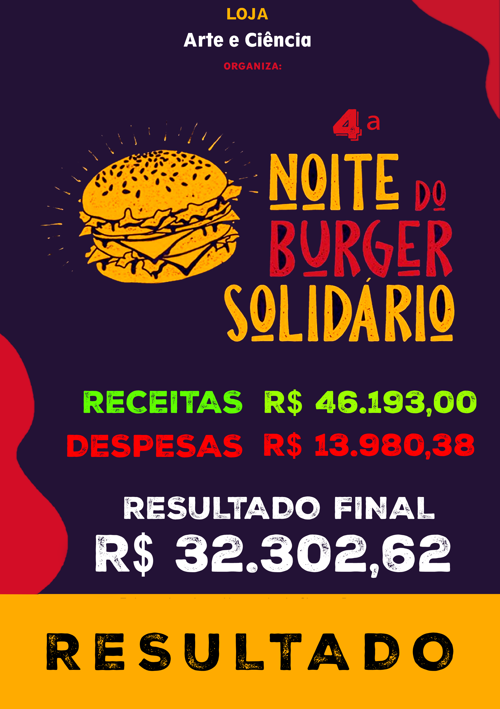

4ª Noite do Burger Solidário
R$27.660,00
valor arrecadado na edição de 2023
Mobilização fortalecida
uma edição que ampliou a rede de apoio e preparou o caminho para os anos seguintes
Múltiplas frentes
apoio à beneficiada central, pessoas em tratamento e instituições locais
Edição 2023
Uma etapa decisiva na expansão do projeto
2023 deixou um legado que continuou crescendo.
A quarta edição movimentou R$27.660,00, com a arrecadação revertida para a Sra. Adriana Miranda, que possuía uma grave deficiência visual, além de apoiar outras pessoas e instituições em diferentes frentes solidárias.
Mais do que um evento isolado, 2023 mostrou a força da mobilização em rede e consolidou uma base sólida de apoio, voluntariado e confiança para as edições seguintes.
Resultado 2023

4º Burger Solidário
Uma edição marcada por apoio direto, sensibilidade social e expansão do alcance solidário do projeto.
Resumo da edição
Uma arrecadação que chegou a diferentes destinos importantes.
A quarta edição realizada em 2023 foi revertida para a Sra. Adriana Miranda, que possuía uma grave deficiência visual. O evento também contribuiu com pessoas e instituições necessitadas em diferentes frentes.
Pessoas apoiadas
- Ajuda ao Cauê, em tratamento contra o câncer.
- Ajuda à Ana Beatriz, também em tratamento contra o câncer.
- Viagem do menino Lorenzo para as Olimpíadas de Matemática em Nova York.
Instituições e frentes atendidas
- Insumos para Nuselon.
- Insumos para o Lar Maria Tereza Vieira.
- Insumos para o Asilo São Vicente de Paulo e para o Lar das Vovozinhas.
- Apoio à família do Rio Grande do Sul afetada pelas fortes chuvas.
Parte da arrecadação também foi destinada às instituições paramaçônicas Arco-Íris e Demolays, sempre presentes no apoio aos eventos.
Registro
Uma edição lembrada pelo alcance solidário.
2023 consolidou a capacidade do projeto de olhar para diferentes necessidades ao mesmo tempo. Esse movimento ajudou a preparar o crescimento que seria confirmado nas edições de 2024 e 2025.
Ligação com a origem
Quer entender como tudo começou?
A página de História reúne a origem da Noite do Burger Solidário, os irmãos homenageados e a transformação do projeto em uma ação anual da Loja Maçônica Arte & Ciência.